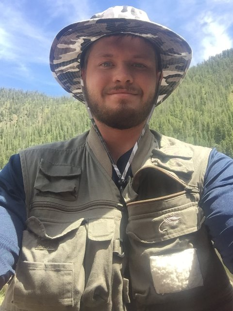

My entire life I have enjoyed sports, especially golf, and spending time outdoors. I love camping, hiking, and playing games wiht my family. I have always had a knack for education and did very well in school when I was younger. I am currently in my third semester studying computer science at Utah State University. Since becoming an Aggie, I have had a lot of adventures and entertaining moments that I would like to share with others. Especially those who are considering coming to Utah State. Go Aggies!

Fishing at Hidden Lake in Montana
| Name | Age | Fav Sport |
|---|---|---|
| Jerry | 47 | Golf |
| Alexis | 23 | Softball |
| Justin | 21 | Golf |
| Dylon | 19 | Basketball |
| Mason | 17 | Football |
Last Modified By Justin Bradshaw September 19, 2016